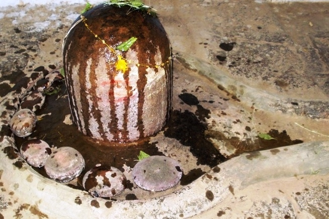

<?xml version="1.0" encoding="UTF-8"?><rss version="2.0"
	xmlns:content="http://purl.org/rss/1.0/modules/content/"
	xmlns:wfw="http://wellformedweb.org/CommentAPI/"
	xmlns:dc="http://purl.org/dc/elements/1.1/"
	xmlns:atom="http://www.w3.org/2005/Atom"
	xmlns:sy="http://purl.org/rss/1.0/modules/syndication/"
	xmlns:slash="http://purl.org/rss/1.0/modules/slash/"
	>

<channel>
	<title>Kirateshwar &#8211; Varanasi Temples</title>
	<atom:link href="index.html" rel="self" type="application/rss+xml" />
	<link>../../../../../index.html</link>
	<description>Temples of Varanasi as referred to in Kashi Khand</description>
	<lastBuildDate>Thu, 19 Jun 2025 05:16:46 +0000</lastBuildDate>
	<language>en-US</language>
	<sy:updatePeriod>hourly</sy:updatePeriod>
	<sy:updateFrequency>1</sy:updateFrequency>
	<generator>https://wordpress.org/?v=4.6.29</generator>
	<item>
		<title>KIRATESHWAR</title>
		<link>../../../../../shiva-temples/kirateshwar/index.html</link>
		<pubDate>Sun, 09 May 2010 09:10:07 +0000</pubDate>
		<dc:creator><![CDATA[admin]]></dc:creator>
				<category><![CDATA[Kirateshwar]]></category>
		<category><![CDATA[Other Shiva Temples (E-K)]]></category>
		<category><![CDATA[Shiva Temples]]></category>
		<category><![CDATA[bharabhooteshwar]]></category>
		<category><![CDATA[bhoot]]></category>

		<guid isPermaLink="false">../../../../../p=308.html</guid>
		<description><![CDATA[Lord Shiva was in Mandarachal and he sent several batches of Shiv Gans to Kashi to create disturbance in the city and distract King Divodas.  (For details, refer to Kukkuteshwar). In one of the batches, one Shiv Gan named Kirat installed a Shiv Ling called Kirateshwar. (KIRATESHWAR) Devotees who worship this Ling in Kashi will [&#8230;]]]></description>
				<content:encoded><![CDATA[<p>Lord Shiva was in Mandarachal and he sent several batches of Shiv Gans to Kashi to create disturbance in the city and distract King Divodas.  (For details, refer to Kukkuteshwar).</p>
<p>In one of the batches, one Shiv Gan named Kirat installed a Shiv Ling called Kirateshwar.</p>
<p></p>
<p style="text-align: center;"><strong>(KIRATESHWAR)</strong></p>
<p>Devotees who worship this Ling in Kashi will shed all fears in their lives.  (Kashi Khand, Chapter 55). Further, Kashi Khand, Chapter 69 states that devotees who worship Kirateshwar which is behind Bharabhooteshwar, will not have any rebirth.</p>
<h1>LOCATION OF KIRATESHWAR</h1>
<p>Kirateshwar is located at Ck.52/15, near Bharabhooteshwar. If a devotee proceeds from Chowk to Neechibaug, immediately after Chowk Police Station there is a left turn which leads to Raja Darwaja.  After walking for about 200 yards, there is a right turn where devotees will find Shyamlal Khatri Attar Merchants (Perfumers).  Opposite to this shop is the premises Ck. 52/15 and inside the big gate, there is Narayan Agricultural Industries. (This spot is locally known as Goodhadee). Devotees will find Kirateshwar inside the premises, under the ground level.</p>
<p>While Kirateshwar Shiv Ling may not be quite famous, the Attar Merchants are quite famous and devotees will be guided properly.  Devotees can reach Raja Darwaja by rickshaw.  At times due to heavy rush, they may have to get down at Chowk – Neechibaug road and walk on foot to Raja Darwaja.</p>
<p><strong><span style="text-decoration: underline;">TYPES OF POOJA</span></strong></p>
<p>The temple remains open from 09.00 a.m. to 06.00 p.m. Devotees can worship as per their convenience.</p>
]]></content:encoded>
			</item>
	</channel>
</rss>
